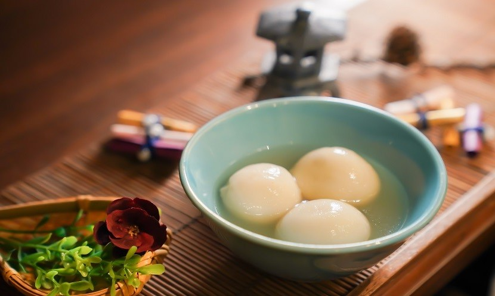

健康湯圓
湯圓魅力無法擋，熱量你該怎麼扛

湯圓屬精白主食
湯圓和元宵是一種以糯米和糖為主的食品，除了精白糯米粉含有大量澱粉之外，餡料中糖分也不少。這類食品是用糯米來做的，而且是非常精細的糯米粉，纖維非常非常少，屬於精白主食，不屬於粗糧。建議如果吃湯圓和元宵，一定要相應減少主食的數量。

湯圓油脂含量高
餡料中的油脂甚至比糖還要多。傳統上用豬油來做湯圓餡料，南方用豬油加肉做鹹湯圓，用豬油加上各種果仁做甜湯圓。這幾年來的新時尚，是用植物奶油，或者説是氫化植物油產品替代黃油和豬油，但這種產品帶來的健康效果，要比豬油和黃油還糟糕得多。建議如果吃湯圓，當餐或當日一定要少吃點油。否則，過多的脂肪和熱量是不可避免的。

巧克力餡營養價值低
餡料中也有些好東西，那就是芝麻、花生和各種堅果仁，還有豆沙。堅果類原料營養價值較高，豆沙也含不少蛋白質和礦物質。相比之下，巧克力餡的營養價值最低。其中很可能放的是代可可脂和巧克力味的香料。至於鹹肉餡的湯圓，油脂更多，可取之處很少。建議優先選擇果仁、芝麻、豆沙等餡料的湯圓。

(四) 元宵比湯圓更難消化
《後漢書》曾記載：「冬至前後，君子安身靜體，百官絕事，不聽事，擇吉辰而後省事。」漢代官員為了慶賀「冬節」通通放假一天。明朝則有著：「家家搗米做湯圓，知是明朝冬至天。」的俗諺。
© Untitled. All rights reserved. Design: HTML5 UP.